{kind=link}
{kind=link}
{kind=link}
{kind=link}
{kind=link}
{kind=link}
{kind=link}
{kind=link}
{kind=link}
{kind=link}
{kind=link}
１つの機能に複数のキーを割り当てることができます。
{kind=link}
ここで登録したものが，「タイプ別設定・カラー」で指定できるようになります。

ファイル拡張子の設定や折り返し文字数，TAB幅の設定などができます。

条件ごとに文字色，背景色などの設定ができます。条件のON/OFF，コメント開始・終了文字列の設定などもできます。
[▲HOME] [機能紹介] [ダウンロード] [GitHub Issues] [OSDNフォーラム]
最終更新: 2018-05-28
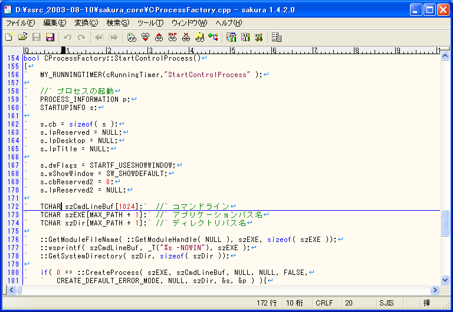
他のスクリーンショット
サムネイル画像をクリックすると実寸画面を見ることができます。
画面は ver1.4.2.0 (2003-08-10) を WindowsXP で動作させたものです。
ファイルの拡張子に従って，キーワード，コメントなどを色分けして表示します。
| 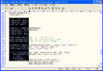 | C++。
矩形選択中です。 |
| 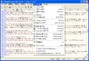 | HTML。
メニューが開かれています。各コマンドにはアイコン，アクセスキー，キー割り当てが表示されます。 |
| 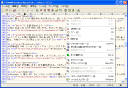 | HTML。
右クリックメニューが開かれています。メニューに表示するコマンドの種類を「共通設定・カスタムメニュー」で編集することができます。 |
| 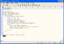 | Perl。 |
このエディタの目玉機能（と勝手に思っているもの）です。
解析結果をダブルクリックすると該当箇所へジャンプします。
| 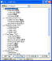 | C++ではクラスごとにまとめてツリー表示します。 |
| 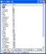 | Perlではsubで宣言されたサブルーチンの一覧を表示します。 |
| 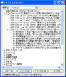 | テキストでは記号，数字，括弧で始まる行を階層化してツリー表示します。 |
複数のファイルから指定した文字列を探し出すことができます。
結果をダブルクリックすると該当ファイルが開き，該当箇所へジャンプします。
| 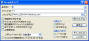 | Grepダイアログボックス。
BREGEXP.DLL が有れば正規表現も使えます。 |
| 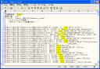 | Grepのノーマル(WZ風)出力結果。
検索文字列が強調表示されます。Grepの出力結果は通常のテキストファイルと同様に編集できます。 |
| 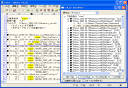 | Grepのファイル毎出力結果。
テキストとしてアウトライン解析ができます。 |
| 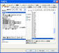 | 共通設定・キー割り当て。
１つの機能に複数のキーを割り当てることができます。 |
| 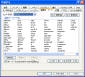 | 共通設定・強調キーワード。
ここで登録したものが，「タイプ別設定・カラー」で指定できるようになります。 |
|
|
タイプ別設定・スクリーン。
ファイル拡張子の設定や折り返し文字数，TAB幅の設定などができます。 |
|
|
タイプ別設定・カラー。
条件ごとに文字色，背景色などの設定ができます。条件のON/OFF，コメント開始・終了文字列の設定などもできます。 |
| 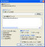 | DIFFダイアログ。
DIFF.EXE が有れば実行できます。実行すると変更箇所がある行の行番号の前に記号が表示されます。 |
| 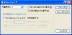 | ジャンプダイアログ。
指定行へジャンプします。PL/SQLを考慮した機能もあります。 |
{kind=link}
{kind=link}